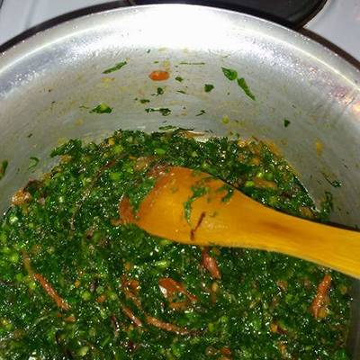

Sukumawiki Recipe

Description
Kales, mostly referred to as sukumawiki by locals is a cheaply available vegetable that is consumed by most households on a daily basis.
Ingredients
- Kales
- Red onion
- Vegetable oil
- Tomato
- Royco cube
- Salt
Steps
- In a sufuria, add oil and heat for a while
- Add the chopped onion and cook until golden brown
- Add the chopped tomato and cover to cook till soft
- Add salt to taste and the royco cube
- Add the chopped kales and cover to cook till desired softness